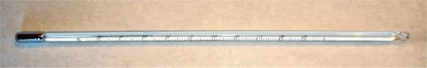
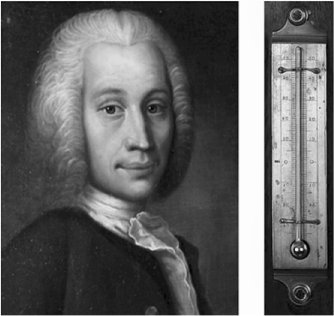

Instrumentul cu care măsurăm temperatura unui sistem termodinamic
este termometrul.
Instrumentul cu care măsurăm temperatura unui sistem termodinamic
este termometrul.
Elemente de termodinamică. |
Noţiuni termodinamice de bază |
Instrumentul cu care măsurăm temperatura unui sistem termodinamic
este termometrul.
Acesta conţin o substanţă termometrică (un lichid în cazul unui termometru cu lichid, un gaz în cazul unuia cu gaz etc.).
Temperatura este indicată indirect, prin măsurarea unei proprietăţi anume a substanţei termometrice, numită proprietate termometrică (lungimea unei coloane de lichid, presiunea unui gaz etc.).
 Provocarea 5-1
Provocarea 5-1
În cazul unui termometru cu mercur, ca cel din figura 5-1, care este substanţa termometrică şi care este proprietatea termometrică?

Figura 5-1. Termometru cu mercur.
Când măsori temperatura unui sistem termodinamic, termometrul trebuie să interacţioneze termic cu acel sistem pentru a ajunge la echilibru termic. Doar la echilibru termic temperatura termometrului este egală cu cea a sistemului termodinamic a cărui temperatură este măsurată. Stabilirea echilibrului termic este semnalată de stabilizarea indicaţiilor termometrului.
Poţi grăbi stabilirea echilibrului termic facilitând transferul de energie între termometru şi sistemul termodinamic a cărui temperatură o măsori. O suprafaţă de contact cât mai mare permite mai multor particule să interacţioneze deodată, astfel că transferul de energie este mai rapid şi echilibrul termic se stabileşte mai curând.
De aceea trebuie să ţii strâns sub braţ, în contact cu piele, câteva minute un termometru medical pentru a fii sigur că s−a stabilit echilibrul termic între termometru şi corpul tău. Doar la echilibru termic temperatura termometrului coincide cu temperatura pielii.
Termometrele pe care le foloseşti au, cel mai probabil, diviziuni marcate în °C. Deşi au forme, dimensiuni şi substanţe termometrice diferite, termometrele corect etalonate vor indica, în condiţii identice, aproape aceeaşi temperatură (în limitele erorilor admisibile pentru fiecare termometru în parte).
Concordanţa indicaţiilor termometrelor se datorează metodei de gradare a scalelor acestora, metodă datorată lui Anders Celsius (figura 2−3).

Figura 5-2. Anders Celsius (1701−1744) şi termometrul realizat de acesta în 1742.
Termometrul care trebuie etalonat se cufundă într−o baie de gheaţă care se topeşte, la presiune atmosferică normală. După stabilirea echilibrului termic, indicaţiei termometrului i se asociază temperatura 0°C.
Acelaşi termometru este apoi menţinut în apă care fierbe, la presiune atmosferică normală. După stabilirea echilibrului termic, indicaţiei termometrului i se asociază temperatura 100°C.
Intervalul dintre cele două indicaţii este împărţit într−o sută de părţi egale. Fiecare interval astfel obţinut corespunde unei modificări de temperatură de un grad Celsius. Scara termometrului este extinsă cu diviziuni de aceeaşi mărime sub 0°C şi peste 100°C.
 Activitatea experimentală 5-1
Activitatea experimentală 5-1
Verifică etalonarea unui termometru de laborator, capabil să măsoare temperaturi în gama 0°C...100°C. Lucrează în echipă.
Pasul 1. Sfărâmaţi gheaţă într-un pahar şi cufundaţi bulbul termometrului în gheaţă, departe de pereţii şi fundul paharului. Aşteptaţi ca gheaţa să înceapă să se topească. Notaţi indicaţiile termometrului, atunci când temperatura acestuia este 0°C (considerândcă presiunea atmosferică este cea normală).
Pasul 2. Turnaţi apă într−un pahar larg de sticlă termorezistentă (pahar Berzelius). Fixaţi cu un stativ termometrul, astfel ca bulbul acestuia să se afle complet cufundat în apă, departe de pereţii şi fundul paharului. Aduceţi apa la fierbere cu un fierbător cu imersie (termoplonjor). În timp de fierbe apa, notaţi indicaţia termometrului atunci când temperatura acestuia este 100°C (condiserând că presiunea atmosferică este cea normală).
Pasul 3. Dacă indicaţiiile termometrului diferă de cele aşteptate, stabiliţi o relaţie de corecţie, astfel ca să puteţi măsura mai precis temperatura folosind acel termometru.
Pasul 4. Lăsaţi termometrul să ajungă la echilibru termic cu aerul din cameră şi folosiţi relaţia de corecţie pentru a determina cu mai mare acurateţe temperatura aerului.